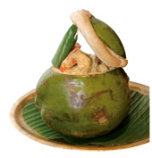
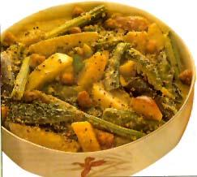

FAMOUS BENGALI DISHES ARE:-
BHOOKARS RATINGS:-


It is a hilsa fish which is steamed and cooked with lots of mustard seeds and is the favourite food of Bengalis. It is usually accompanied with rice. Make it spicy to discover its actual taste!
WHERE TO EAT- 6TH BALLYGUNJE PALACE, BHOJORI MANNA (WEST BENGAL)
DAB CHINGRI
BHOOKARS RATINGS:-


In basic English it is prawns cooked inside an open coconut with spices and cream.. It is one of the favourite dishes of people of Bengal and is found at every turn in the beaches of bengal.
WHERE TO EAT-6 BALLYGUNGE PALACE (WEST BENGAL)
 SHUKTO
SHUKTO
BHOOKARS RATINGS:-


Shukto is a mixed preparation known for its bitterness. If you are a tourist, you MUST try this!
WHERE TO EAT- GUPTA BROTHER(KOLKATA)